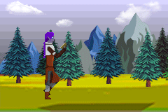

Esta pagina funciona como ya dije en un portafolios Web, aqui encontraran algunos de los proyectos que he hecho, tanto para mi como para mis estudios, no hay mucho por ahora ya que solo es una pagina base y porque no hay mucho contenido, pero eso siempre se puede arreglar.
Chara - Manga
Un dibujo colaborativo que hice con otro artista con el que me lleve bien, pudo ser mejor pero en su momento me gusto el resultado
Sans
Un dibujo que hice con permiso de otro dibujante, fue uno de los primeros trabajos que hice ya hace años
Luvcu Volk
Una quimera para un trabajo que consistia en ejercitar la creatividad, una mezlca entre lobo, erizo, pavorreal y castor.
Vita Zoi
Parte de otra pequeña historia que escribi es un arbol dorado sin hojas pero que provee frutos.
Remember
Habia que realizar distintos "trabajos" pero debian englobar un tema, y elegi los recuerdos, como estos se vuelven mas nitidos, para ser exactos.

Tali-Walking
Acaba Un Gif a Pixel-Art sobre un personaje que cree en un videojuego y al que le tome bastante cariño.